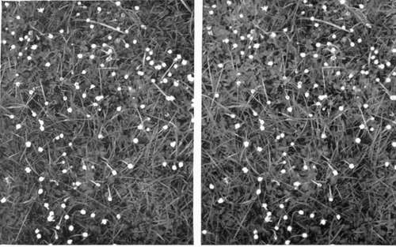
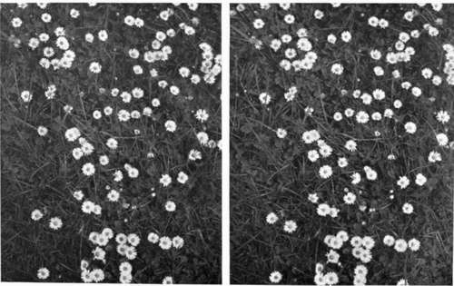
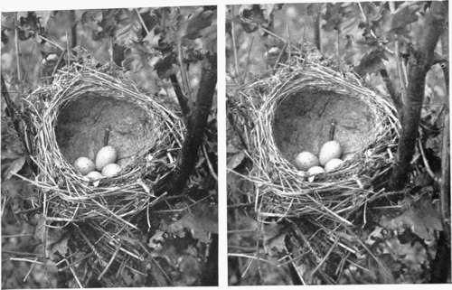
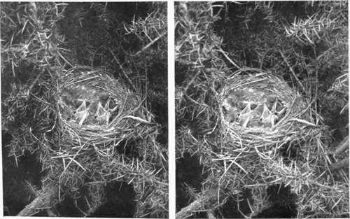
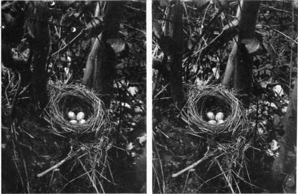

Birds And Their Nests And Eggs. Part 3
Description
This section is from the book "Nature Photography For Beginners", by E. J. Bedford. Also available from Amazon: Nature Photography for Beginners.
Birds And Their Nests And Eggs. Part 3
At last, let us suppose the day arranged for our first excursion has arrived. It is one of those delightful spring days when the sky is filled with fleecy clouds, of a kind to warrant us in assuming there will be no rain. So we set out, having previously filled our slides or envelopes with plates and checked off each item of our kit by the list we have made, so that we are certain nothing required has been left behind. We have taken care in packing our apparatus that nothing will be able to get loose and shake about to stir up dust, especially so concerning our plates, which if much jolted about during our journey will be certain to develop a crop of pinholes where particles of dust have settled on the film before exposure. We are bound for a small farmhouse in the country, situated near a wood, where the owner has kindly given me permission to roam about to my heart's content. He will be pleased to see you with me on this occasion. As we leave the little country railway station a few miles out from the town, we walk along the road for a short distance, and about a quarter of a mile from the railway leave the road and get over a stile, making our way across several fields until we reach the farm. The farmer's wife happens to be at home, and on going to the house we are asked in for a short rest and a glass of new milk, and a piece of home-made cake is set before each of us, which we do not refuse, the pure country air having already given us an appetite. We thank our hostess, having promised to return later on to partake of a refreshing cup of tea, before which time we hope to have made some discoveries and to have exposed nearly all our plates.
Fig. 38. Daisies Asleep.
Fig. 39. Daisies Awake.
We first make for a little clearing in the wood close by, where the anemones and primroses are spread at our feet like a beautiful carpet, and the fragrance from the blossoms of both fills the air. This clearing was cut down some time ago and the new growth has sprung up round the old roots and is just the place to find the nests of the Song Thrush and Blackbird. Ah! you have stepped on a piece of rotten wood which has cracked, and the noise has sent a Song Thrush flying off from a stump just ahead of us. We walk up and there at the bottom, not more than a foot above the ground, and quite exposed to view, is the nest containing four beautiful blue eggs spotted with black dots. The nest is cup-shaped, fairly deep, and is lined with a coating of mud or rather a mixture of cow-dung and mud. This coating is so watertight that sometimes, after a heavy rain, the nest becomes nearly filled with water. This nest will make a good subject to commence with, so we erect our tripod and fix the tilting board on top. We then get out the camera, which is fastened to the tiltingboard and the lens screwed into its flange. We bring the camera fairly close up to the subject, and having opened the shutter, place the head under the focussing cloth. Now we discover the use of the tilting-board, and by raising it up to the necessary angle we see the nest shown on the screen. After you have focussed let me see how you have arranged the subject on your plate. Yes, you have included all the subject, but you have arranged the camera so that the lens points down nearly directly over the nest. You have, no doubt, been anxious to show all the eggs, but it will be much better to get a little further away so that you show two complete eggs and the tops only of the others. This will look better in your picture than if the camera were placed directly over the nest, making the result look something like a plan. You have now chosen a better position and nothing obstructs the view of the nest with the exception of two or three boughs, which can easily be bent back out of the field of the lens. If you obtain a sharp focus on, say, the near edge of the nest, you will find the further edge will not be sharp enough and the background still less distinct, so you must stop down the lens, and as the nest is fairly close stop /22 is required before the definition throughout all the planes of the picture is satisfactory. There is a little wind blowing, but as the buds are only just breaking into leaf we shall find it does not affect the subject much, and by exercising a little patience we notice that occasionally there is a longer interval of stillness. We get out our exposure meter and place it so that the paper which has to darken receives the same kind of light as the nest, that is to say, if the nest is in shade, the meter must be held in the shade, and if the sun is shining it will be better to wait until a cloud obscures it, as we shall get a better result without strong sunlight on the subject. There is a cloud near so we shall not have to wait long, but if there had not been, I would have held the piece of tissue paper I told you to bring, so that it filtered the sunlight equally over the subject. This would have had a similar effect to the cloud, and would have prevented the strong contrasts due to the direct sunlight.
Fig. 2. Song Thrush's Nest.
Fig. 3. Young Song Thrushes.
Fig. 4. Blackbird's Nest.
Now we have set the shutter and drawn the slide of the plate-holder, keeping the focussing cloth over the camera as far as possible, and we are quite ready for the exposure. We find this to be one second with the rapid plate and stop we are using, so we set the shutter for " time." There is just now a still interval, so having previously practised counting four to each second, we open the shutter by pressing the pneumatic release, count one, two, three, four, and close it again. We then close the slide and enter the particulars of the exposure (plate No. 1) in our note book, placing the slide just exposed, if it contains one plate only, in a separate part of our case so that it is not likely to get mixed with the unexposed ones. If it is a dark slide which contains two plates we mark on the small tablet provided in most patterns the subject, and wait until we have exposed plate number two before putting it apart.
Continue to:
- prev: Birds And Their Nests And Eggs. Part 2
- Table of Contents
- next: Birds And Their Nests And Eggs. Part 4
Tags
nature, photography, art, birds, camera